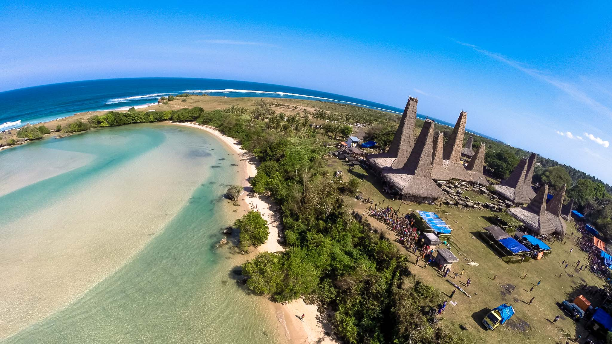
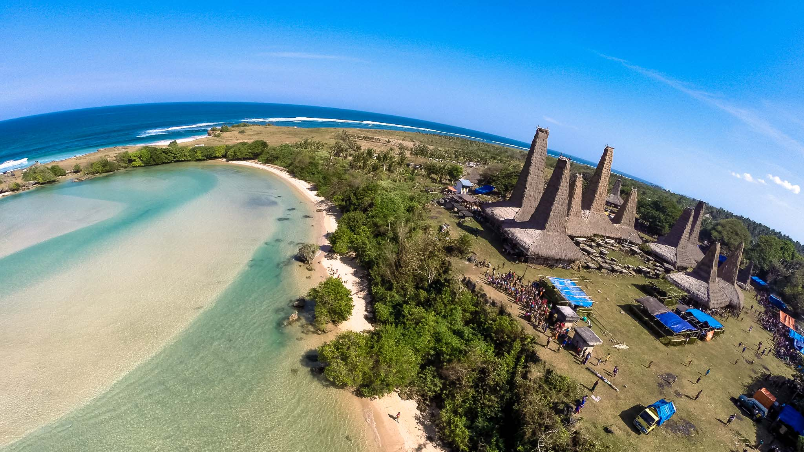

Pantai Ratenggaro
Salah satu pantai yang indah di Nusa Tenggara Timur adalah Pantai Ratenggaro. Pantai ini merupakan perpaduan antara wisata alam dan budaya karena di dekat pantai terdapat sebuah desa tradisional bernama Kampung Ratenggaro dengan makam batu yang unik dan bersejarah tepat di pantai. Pantai Ratenggaro memiliki ombak besar dengan long roll, dan sangat cocok untuk mereka yang suka surfing. Sayangnya, tidak ada fasilitas untuk aktivitas yang menantang ini, kondisi yang demikian menjadi tugas besar bagi pemerintah daerah. Pesona pantai tidak hanya dari pantainya, namun pengunjung yang datang ke Retanggaro bisa melihat kehancuran makam dari jaman megalitik, atau sekitar 4.500 tahun yang lalu. Pantai Ratenggaro masih alami dan sangat bersih. Garis pantai ditandai oleh pasir putih hingga air kristal. Suara air ombak bisa terdengar dari desa sebelah. Setiap malam, ada penduduk lokal yang berkunjung ke pantai. Bila Anda datang ke pantai ini, atau mengelilingi Pulau Sumba, Anda disarankan memakai sepatu tertutup. Ini diperlukan untuk menghindari Anda dari tetanus. Salah satu keunikan pantai adalah bahwa Ratenggaro terletak tepat di muara sungai dengan air biru. Tiba di Pantai Ratenggaro, kesan pertama adalah tentang suasana etnik. Itu karena Anda akan melewati banyak desa tradisional. Bila Anda datang ke sana, Anda tidak hanya menikmati pantainya, tapi Anda bisa menikmati budaya yang luar biasa. Pertama, Anda bisa meluangkan waktu untuk mengagumi keindahan panorama. Air biru dan gelombang dahsyat menjadi kombinasi sempurna bagi mereka yang mencintai alam dan selancar. Tapi, Anda harus menjadi perenang profesional karena ada palung dalam di sini. Setelah Anda selesai berenang atau bermain air, Anda bisa mulai menjelajahi rumah tradisional Ratenggaro. Mereka tetap mempertahankan arsitektur aslinya. Kadang, Anda akan mendengar dari penduduk desa bahwa ada kepercayaan tentang desa mereka. Anda tidak diperbolehkan menyeberangi muara sungai ke desa berikutnya, Wainyapu, bernyanyi, dan bersiul. Sebaiknya Anda harus mematuhi undang-undang tidak tertulis ini karena penduduknya sendiri sangat tegak mematuhi peraturan ini. Saat Anda berjalan di sekitar pantai, Anda akan melihat salah satu kuburan setinggi 3 meter. Di Ratenggaro, Anda bisa melihat menara rumah dari dua desa, yaitu Wainyapu dan Ratenggaro. Tidak mengherankan jika orang menyebut desa-desa ini sebagai 'Desa Seribu Tower’. Perjalanan atau Rute Menuju Pantai Ratenggaro Pantai Ratenggaro ada di Desa Ratenggaro, Kecamatan Kodi Bangedo, Kabupaten Sumba Barat Daya, Provinsi Nusa Tenggara Timur. Dari Kota Tambolaka, dibutuhkan 48 km. Infrastruktur menuju pantai mulus dan memakan waktu sekitar 1,5 jam dari Kota Waikabubak. Jika ingin naik kendaraan umum, ada bus dan bus mini ke Bondo Kodi. Kemudian, Anda bisa melanjutkan perjalanan dengan menggunakan sepeda motor. Jika ingin jalan alternatif, Anda bisa membawa agen perjalanan untuk datang ke Pantai Ratenggaro. Sepanjang jalan menuju pantai, Anda akan melihat pohon kayu keras sepanjang sekitar 2 km.

Pantai Wee Kuri
Banyak sekali danau alami nan indah di wilayah Nusa Tenggara Timur. Salah satunya Danau Weekuri, yang terletak di pesisir Pantai Mandorak, Desa Kalenarogo, Kecamatan Kodi Utara, Sumba Barat Daya. Danau ini merupakan salah satu yang paling unik di Indonesia. Pasalnya, kandungan air yang memenuhi danau tersebut adalah air payau. Kadar garamnya termasuk tinggi sehingga mereka yang berenang tak sulit untuk mengapungkan badan. Air asin bisa berada di danau ini karena pada dasarnya Weekuri adalah laguna yang hanya dipisahkan oleh batu karang dari tepi Pantai Mandorak. Saat pasang atau ombak besar, air laut masuk ke dalam danau. Sementara di danau itu juga terdapat beberapa mata air. Campuran antara air tanah dan air laut itu membuat sifat air menjadi payau. Selain itu, gradasi warna air di danau ini juga menjadi bervariasi. Ada yang berwarna biru cerah, biru sedikit kehijau-hijauan, bahkan ada yang rasanya hangat dan ada yang dingin. Warna air danau dihiasi oleh bayangan kecoklatan pada dasar danau yang merupakan karang landai. Weekuri berasal dari bahasa Sumba, yang berarti air (wee) dan percikan (kuri). Hingga Weekuri diartikan sebagai air dari hasil percikan karang yang menerobos ke daratan, kemudian membentuk danau atau laguna. Jika Anda melihatnya dari atas, danau Weekuri berbentuk lonjong dengan panjang sekitar 150 meter ke arah daratan, dengan lebar terjauh 50 meter, serta kedalaman yang bervariasi sekitar 3-5 meter ketika laut pasang. Saat air danau surut, dasar danau terendah hanya sekitar 30 cm dan hanya tampak pasir putih mengilap, sementara dasar terdalam sekitar 2,5 meter dengan air danau berwarna biru. Keunikan dan keindahan alam di sekitarnya membuat Danau Weekuri, yang seperti terisolasi dari dunia luar, layak dijadikan salah satu tujuan yang sebaiknya dikunjungi jika Anda berwisata ke NTT. Di sekitar danau, Anda akan mendapati penduduk asli Sumba yang menjual kerajinan tangan, mulai dari gelang kulit penyu, katopo--senjata tajam khas Sumba, hingga kain tenun khas Sumba yang diklaim merupakan selimut para dewa. Akses relatif sulit, fasilitas minim Namun memang agak sulit untuk melancong ke kawasan tersebut karena letaknya yang lumayan jauh. Jaraknya kurang lebih 100 km dari kota Waikabubak, ibu kota Kabupaten Sumba Barat, atau 60 km dari kota Tambolaka, ibu kota Kabupaten Sumba Barat Daya. Jika menggunakan kendaraan pribadi, mobil atau motor, Anda dapat melalui jalur Desa Kalenarogo dengan waktu tempuh sekitar 3 jam. Saat Beritagar.id mengunjungi danau ini beberapa waktu lalu, akses jalan menuju danau relatif masih sulit. Pendek kata, lebih mudah menggunakan motor dibandingkan dengan mobil. Anda juga harus menapaki jalur berdebu tebal di Desa Kalenarogo. Tak heran, jika tiba di danau, jeket dan celana Anda akan langsung kotor dengan kepenatan tak terkira. Namun tentunya, semua itu ditebus dengan kesejukan air danau. Menurut situs Indonesia Kaya, wisatawan bisa menyewa motor atau mobil dari Waikabubak atau Tambolaka. Harga sewanya berkisar antara Rp500.000-Rp600.000 sudah beserta sopir untuk mobil. Sementara sewa sepeda motor antara Rp100.000-Rp150.000 rupiah per harinya. Karena nyaris tak ada petunjuk jalan ke kawasan tersebut, akan lebih baik jika Anda menyewa jasa pemandu wisata lokal atau mengajak teman yang pernah berkunjung ke sana. Untuk masuk ke Danau Weekuri, Anda akan melewati pos yang dijaga penduduk lokal setempat. Pengunjung akan diminta membayar tiket masuk dengan harga serela pengunjung. Pos jaga itu berjarak sekitar 20 meter dari tepi danau. Fasilitas di danau ini masih sangat minim. Tidak ada warung makan atau hotel di sini. Oleh karena itu, ada baiknya menyiapkan bekal makanan dan minuman yang cukup. Secara umum para pengunjung Danau Weekuri relatif lebih ramai saat bulan-bulan penyelenggaraan upacara adat Sumba, yakni pada Februari hingga Maret. Pada bulan-bulan itu, masyarakat Sumba menyelenggarakan Pasola yang merupakan bagian dari serangkaian upacara tradisional Marapu--yang diyakini juga sebagai agama lokal masyarakat Sumba. Pasola diselenggarakan di empat kampung adat di wilayah Sumba Barat, yakni Kodi, Lamboya, Wonokaka, dan Gaura.

Air biru tak berujung di air terjun terbesar di Sumba: Waikelo Sawah
Bumi Sumba memiliki iklim yang unik yakni musim kemaraunya yang lebih panjang, sekitar 9 bulan lamanya sedangkan musim penghujannya hanya terjadi sekitar 3 bulan. Hal tersebutlah yang menjadikan tanah Sumba cenderung tandus, kering dan bahkan di beberapa titik juga kesulitan air. Namun untungnya, di Sumba banyak terdapat sumber mata air tawar dan salah satunya yang tak pernah kering meskipun musim kemarau sekalipun adalah Waikelo Sawah. Waikelo Sawah terletak di Desa Tema Tana, Kecamatan Wewewa Timur, Kabupaten Sumba Barat Daya, Provinsi Nusa Tenggara Timur. Dibangun pada tahun 1976, Waikelo Sawah ini dirancang untuk tujuan irigasi dan pembangkit listrik. Pengadaan pembangkit listrik itupun menjadi Pembangkit Listrik Tenaga Air (PLTA) pertama di Sumba ketika itu. Pembangunan bendungan air terjun ini diprakarsai oleh Camat Lele Umbu Zogara. Berada di kaki bukit dan dikelilingi oleh pepohonan rimbun dan sawah-sawah penduduk setempat, menjadikan suasana di Waikelo Sawah ini sangat teduh dan menyegarkan. Terkadang di sekitar kolam, Anda akan melihat beberapa penduduk lokal setempat yang datang untuk sekedar mandi dan mencuci pakaian sambil menikmati pemandangan di sekitar. Apalagi ketika musim kemarau datang, Waikelo Sawah akan sangat ramai didatangi. Waikelo Sawah ini sekilas berbentuk mirip dengan gua alami selebar 4m dengan ketinggian sekitar 3m, yang dimulut guanya membentuk sebuah kolam dengan air yang sangat jernih. Kolam airnya sekilas terlihat tenang, namun pengunjung tidak diperbolehkan berenang dikarenakan terdapatnya arus besar di dalam kolam tersebut. Konon katanya kolam tersebut pernah memakan korban. Selain itu, debit air yang mengalir dari bendungan Waikelo Sawah ini cukuplah deras yaitu diperkirakan mencapai 1000 liter/ detiknya (berdasarkan sebuah penelitian yang dilakukan oleh Dinas Pekerjaan Umum Kabupaten Sumba Barat Daya). Berlimpahnya aliran air di Waikelo Sawah ternyata sangat berguna bagi penduduk desa setempat. Aliran air dari Waikelo Sawah ini mampu mengairi persawah untuk beberapa desa diantaranya Desa Tema Tana, Kalembu Ndara Mane, Mareda Kalada, Pada Eweta, Wee Rame, Dikira dan Desa Tanggaba. Apabila dicermati lagi, ternyata di dalam bendungan dan gua di Waikelo Sawah ini terdapat air terjun yang menjadi sumber aliran airnya. Aliran air terjun tersebut mengalir ke kolam di mulut gua, kemudian membendung dan pada akhirnya berguna untuk kebutuhan irigasi dan PLTA. Akses Menuju Lokasi Wisata Apabila Anda memulai perjalanan menjelajahi Sumba dari arah Bandara Tambolaka ke arah pusat Kota Waikabubak, sebenarnya akan melewati Waikelo Sawah. Dengan jarak sekitar 12 km dari Tambolaka, ibukota Kabupaten Sumba Barat Daya, perjalanan menuju lokasi dapat ditempuh dalam waktu sekitar 40 menit dengan menggunakan kendaraan bermotor. Kondisi jalan menuju lokasi juga sudah beraspal halus, namun ada beberapa titik di dekat lokasi yang masih berkerikil. Belum terdapat transportasi umum ke lokasi, sehingga pengunjung yang hendak mengunjungi Waikelo Sawah dapat mengunakan jasa ojek dari Tambolaka atau menyewa kendaraan dari kota. Begitu pula halnya dengan fasilitas umum lainnya. Tak ada warung makan dan toilet yang memadai, pengunjung dapat membeli bekal makanan dan minuman ringan terlebih dahulu di Tambolaka. Bagi kalian yang tertarik mengunjungi Waikelo Sawah, sebaiknya datang pada bulan Februari, Maret ataupun November karena pada bulan-bulan tersebut, akan diselenggarakan tradisi rutin masyarakat Sumba yaitu tradisi Pasola dan Wula Podu yang sangat sayang untuk dilewati jika sedang menjelajahi tanah Sumba.
Desa kuno di atas bukit dengan panorama Waikabubak: Kampung Tarung
Memahami kebhinekaan Indonesia akan menjadi lebih sulit bila kita mengabaikan kebudayaan-kebudayaan asli yang masih hidup meskipun sudah terkepung oleh peradaban modern. Pulau Sumba adalah salah satu pulau di mana adat kepercayaan lama masih dijalankan dengan taat. Salah satu kampung yang masih melaksanakan kepercayaan lama itu adalah Kampung Tarung di Sumba Barat, di mana warganya menjalankan kepercayaan “Merapu”. Berbeda dengan suku lain di mana tradisi adat dijalankan secara ketat yang cenderung berlokasi terpencil, lokasi Kampung Tarung justru berada di dalam kota. Tepatnya kota Waikabubak yang merupakan ibukota Kabupaten Sumba Barat, Nusa Tenggara Barat. Karena hampir tidak ada jarak dengan peradaban modern, maka semakin berat bagi warga Kampung Tarung mempertahankan kemurnian adatnya. Walaupun memiliki ritual yang unik, para pemeluk Merapu ini enggan menyebut kepercayaan tersebut sebagai agama. Pemimpin adat kampung ini disebut Rato. Setiap pengunjung yang ingin menyaksikan kehidupan di kampung ini sebelumnya harus meminta izin dari Rato. Keunikan yang langsung terlihat ketika mengunjungi Kampung Tarung adalah arsitektur dan tata ruang kampungnya. Setiap aspek penataan dalam kampung tersebut selalu ada filosofi yang mendasarinya. Rancang rumah asli tidak menggunakan pasak maupun paku dari besi, dibangun secara sederhana, selalu dibagi tiga bagian vertikal yaitu, bagian atas untuk para roh leluhur dan penyimpanan pangan, bagian tengah untuk manusia yang masih hidup, dan bagian bawah untuk hewan ternak. Masih banyak lagi cerita dan kebijaksanaan yang dapat digali dari Kampung Tarung ini. Silahkan tonton video produksi Watchdoc Image di bawah ini untuk mengenal lebih dan silahkan berkunjung untuk lebih lengkap lagi.

Pemandangan seindah gambar di kartu pos: Pantai Bawana
Banyak hal menarik yang bisa ditemukan di Sumba, Nusa Tenggara Timur. Satunya adalah Pantai Bawana, pantai cantik yang masih perawan. Coba main ke sini deh! Ingin melepaskan penat karena beban kerja atau mau menyendiri di pantai yang sunyi, cobalah datang ke Pantai Bawana Sebagai daerah yang disebut-sebut sebagai surga kecil di tanah timur, Sumba tak pernah kehabisan memanjakan mata setiap pengunjung dengan pantai-pantainya yang indah. Salah satu pantai yang tidak hanya cantik namun juga unik karena terdapat tebing karang yang bolong di tengah-tengahnya, yaitu Pantai Batu Cincin atau yang biasa di kenal sebagai Pantai Bawana. Untuk sampe ke pantai yang berada di Kecamatan Kodi, Sumba Barat akan memakan waktu sekitar 2 jam dari Sumba Barat Daya. Tapi tenang sepanjang perjalanan kita akan disuguhi keunikan budaya lokal setempat, sebut saja kubur batu yang terdapat hampir di semua rumah warga. Uniknya, karena kubur batu tersebut berada di depan atau samping rumah. Akhirnya setelah perjalanan panjang, tiba lah saya di pintu masuk menuju Pantai Bawana. Belum berhenti sampai di situ, kita harus trekking ke bawah, diapit pepohonan yang rindang membuat perjalanan tidak terasa melelahkan. Mendekati tepi pantai, dari kejauhan terdengar debur ombak yang memanggil-manggil. Wahh semakin penasaran dong, dan begitu sampe di tempat, perasaan kagum tidak bisa saya sembunyikan. Hamparan pasir lembut, deburan ombak, tebing-tebing yang berdiri gagah dan tebing bolong yang menjadi icon pantai Mbawana ini seolah menghipnotis saya. Entah kenapa, mungkin karena berada di kawasan yang sepi dan tertutupi tebing-tebing tinggi, menginjakkan kaki di pantai ini langsung membuat saya merasa damai. Setelah berfoto-foto dengan banyak gaya, dari duduk, loncat, tidur dan membuat video ala-ala, duduk di tepi pantai adalah cara yang sangat tepat untuk menikmati pantai ini. Oh ya untuk informasi, karena memang masih jadi pantai yang orisinil, tidak ada yang berjualan di pantai ini. Jadi ada baiknya teman-teman membawa minum ketika akan turun ke bawah. Tenang, jika lupa membawa minuman, maka ada warga setempat yang menjual kelapa muda di loket masuk. Menikmati air kelapa segar setelah lelah naik ke atas sehabis menikmati keindahan pantai Mbawana adalah hal yang sangat nikmat, jadi harus banget sih beli kelapa muda di sini sekalian membantu perekonomian warga sekitar.

Berendam di kolam zamrud tersembunyi: Air Terjun Waimarang
Waingapu - Tak kalah dengan Sumba Barat Daya, Sumba Timur juga punya banyak destinasi wisata unggulan. Salah satunya adalah Air Terjun Waimarang. Berlokasi di Desa Waimarang, Sumba Timur, Air Terjun Waimarang menjadi salah satu destinasi yang cukup mencuri hati traveler. Selain indah, air terjun ini juga memiliki kolam renang yang tercipta oleh alam. Untuk mencapainya, traveler pun harus berkendara sekitar dua jam dari pusat Kabupaten Sumba Timur di Waingapu. detikTravel pun berkunjung ke air terjun ini beberapa waktu lalu. Medan off road hingga sabana pun terlebih dulu menyambut perjalanan traveler menuju Air Terjun Waimarang. Jika beruntung, traveler juga bisa melihat kuda yang tengah merumput. Setibanya di lokasi, traveler akan menemukan area lapangan luas untuk parkiran dengan beberapa warung sederhana. Cuma sabar dulu, masih ada jarak satu kilometer trekking menuju Air Terjun Waimarang. Pastikan kamu memakai sandal gunung atau sepatu yang nyaman, mengingat medan menuju air terjun yang naik turun. Tepat sebelum sampai, traveler juga harus melintasi sungai lebih dulu. Wlaau sedikit melelahkan, perjuangan trekking akan terbayar dengan keindahan Air Terjun Waimarang. Air terjunnya memang tidak besar atau tinggi, tapi punya kolam renang alami yang cukup luas. Biasanya, para traveler yang berkunjung ke sini tak akan melewatkan kesempatan untuk berenang. Siapa coba yang tahan untuk tidak main air di sini? "Kalau sudah sampai sini nggak berenang rugi!" ujar pemandu saya, Indra. Tak perlu waktu lama untuk melihat aksi orang melompat. Satu per satu, para pengunjung melompat dari salah satu sisi batu menuju kolam. Byur! Sensasi segar pun langsung terasa. Saya sendiri tidak melewatkan kesempatan untuk main air di Air Terjun Waimarang. Hanya perlu diingat, tak ada ruang ganti di lokasi air terjun. Namun, traveler bisa menemukan ruang ganti sederhana di area parkiran kendaraan. Di salah satu sisi air terjun juga dapat ditemui permukaan yang lebih tinggi. Di sampingnya juga terdapat kolam yang berukuran lebih mini dan tak kalah menyegarkan. Hanya sayang, tampak sejumlah aksi vandalisme pada objek wisata ini. Hal itu dapat dilihat lewat pahatan nama di beberapa sisi air terjun. Ada saja ulah dari oknum traveler yang tak bertanggung jawab. Bagi kamu yang ingin berkunjung ke Air Terjun Waimarang, tak dikenakan biaya. Hanya saja ada biaya parkir Rp 10 ribu untuk mobil dan Rp 5 ribu untuk motor.

Serunya river tubing di Air Terjun Tanggedu
Indonesia, dengan segala keindahannya, menjadi surga bagi mereka yang gemar eksplorasi mencoba menemukan berbagai serpihan surga, yang konon katanya banyak jatuh di Indonesia. Kali ini, eksplorasi tersebut sampai di Sumba Timur, Nusa Tenggara Timur, yaitu Air Terjun Tanggedu. Berlokasi di Desa Tanggedu, Kecamatan Kanatang, Kabupaten Sumba Timur, Air Terjun Tanggedu baru-baru ini saja tersorot keberadaannya. Popularitasnya naik dikarenakan oleh mulai banyaknya para petualang yang datang ke sini, dan mengabadikan momen seru mereka ke berbagai platform sosial media.Keberadaan Air Terjun Tanggedu, air terjun yang lokasinya tersembunyi dari hiruk pikuk kota ini juga dipengaruhi oleh penyebaran informasi yang sangat cepat di sosial media. Seperti yang sudah disebutkan di atas sebelumnya, Air Terjun Tanggedu cepat sekali terkenal melalui Instagram. Pasalnya, di Instagram, foto-foto atau video tentang Air Terjun Tanggedu cepat sekali menyebar, dan cepat sekali juga mendapat perhatian karena memang kecantikan spot petualangan ini luar biasa. Untuk lo yang mungkin tidak gampang percaya, mungkin akan mengira air terjun ini ada di luar negeri. Keindahan alamnya yang memukau dan masih asri dan terjaga karena terhindari dari jangkauan tangan-tangan jahil, membuat Air Terjun Tanggedu ini awet keindahannya. Air Terjun Tanggedu konon katanya mirip dengan salah satu spot petualangan di Amerika, yaitu Grand Canyon. Tetapi, maaf bro – Grand Canyon di Amerika mempunyai karakteristik tersendiri, begitu pulau Air Terjun Tanggedu. Walau mirip dengan tebing-tebing curam yang berada di samping kanan kirinya, Air Terjun Tanggedu berdiri kokoh di balik tebing-tebing terjal tersebut. Airnya yang bersih bening kebiru-biruan membuat air terjun ini indah luar biasa. Debit air yang cukup deras menggoda sekali untuk melakukan body rafting atau tubing di sini. Terlebih, air sungai di sini tidak terlalu dalam, sehingga cukup apik untuk melakukan aksi seru tersebut. Cliff Jumping dari tebing di Air Terjun Tanggedu? Kenapa tidak, bro! Namun, untuk melakukan lompatan ekstrim itu, lo harus pastikan dulu titik kedalaman air sungai atau kolam yang berada persis di bawah air terjun tersebut. Kalau tidak terlalu dalam, sepertinya oikir-pikir lagi, bro. Jika lo perhatikan, relief yang ada di tebing-tebing yang mengapit aliran sungai Air Terjun Tanggedu yang berkelok-kelok ini mempunyai pola yang unik. Oleh karena itu, tidak sedikit para petualang yang mengabadikan momen seru mereka di sini, dan berlatarbelakang relief tebing tersebut. Jarak menuju Air Terjun Tanggedu memang terbilang jauh, kondisi jalannya pun belum cukup baik, Berjarak sekitar 45 km dari Kota Waingapu, bisa lo tempuh menggunakan roda dua atau pun roda empat. Terletak di utara Kota Waingapu, Desa Tanggedu, Sumba Timur, sebelum tiba di tempat wisata ini lo akan melalui Mondu dan Kampung Adat Painatang. Untuk menuju ke sini, lo bisa dengan mudah menggunakan kendaraan roda empat atau roda dua, dan lo parkirkan nanti di tempat yang sudah disediakan. Akses jalanan menuju Air Terjun Tanggedu memang belum begitu baik dan mulus. Kendaraan yang lo bawa harus diparkirkan di rumah warga Desa Tanggedu. Perjalanan sepanjang 2,5 km pun dilanjutkan dengan berjalan kaki melalui Mondu dan Kampung Adat Painatang. Meski harus berjalan lumayan jauh, lelah lo akan terbayar dengan keindahan dan keseruan objek wisata Air Terjun Tanggedu ini. Untuk masuk ke dalam, lo juga cukup membayar tiket seharga Rp 2 ribu. Enggak perlu khawatir kalau lo lapar dan haus, ada deretan warga penjual makanan dan air kelapa muda di sepanjang jalan menuju lokasi air terjun.
Rasakan kekuatan alam di Air Terjun Matayangu
Bosan dengan tempat wisata yang itu-itu saja? Air Terjun Matayangu mencoba untuk memberikan suasana yang berbeda. Air terjun ini berada di Desa Waimanu, Kecamatan Katikutana, Kabupaten Sumba Tengah, Nusa Tenggara Timur. Air terjun ini masih sangat asri daobjek-wisata-ntt_98798_271_air_terjun_matayangun jarang dieksplor oleh manusia. Masyarakat sekitar yang juga sangat memelihara alam sebagaimana adanya sehingga memberikan daya tarik natural yang sangat memesona dengan gemuruh air terjun bagaikan mutiara putih yang berkilau diterpa matahari siang. Kicauan burung-burung dan dedaunan yang ditiup angin akan membuat Anda merasa nyaman dan betah untuk menikmati suasana air terjun sambil berenang di kolam dengan hempasan air dari puncak tebing. Suasana hutan musim semi dan tebing-tebing yang terjal dapat Anda saksikan jika Anda berkunjung ke objek wisata ini. Wajar saja, Air Terjun Matayangu terletak di dalam Taman Nasional Manupeu. Jika beruntung, Anda akan melihat berbagai kupu-kupu yang indah. Sebab, di taman nasional ini memang terdapat 57 jenis kupu-kupu termasuk tujuh endemik Pulau Sumba, yaitu Papilio Neumoegenii, Ideopsis Oberthurii, Delias Fasciata, Junonia Adulatrix,Athyma Karita, Sumalia Chilo, dan Elimnia Amoena. Kurang puas dengan air terjunnya, Anda juga bisa berjalan-jalan mengelilingi taman nasional seluass 88.000 hektar ini. Terlalu luasnya, mungkin Anda tidak akan bisa menyaksikan seluruh keindahan taman nasional beserta air terjunnya dalam waktu satu hari. Waktu terbaik yang disarankan untuk mengunjungi taman nasional ini adalah bulan Maret sampai Juni dan Oktober sampai Desember. Sebab, di bulan itu lah air terjun akan memuntahkan air dengan debit yang maksimal. Untuk mencapai taman nasional ini, Anda bisa melalui rute yang biasa digunakan oleh para wisatawan. Perjalanan di awali dengan menggunakan pesawat terbang dari Kupang menuju Waingapu sekitar 1 jam. Lalu, dari Waingapu menuju ke Waikabubak dengan kendaraan roda empat selama sekitar 2 jam. Keramahan dan kehangatan warga sekitar dan keindahan alam serta ekosistem di dalamnya sangat menarik untuk dikunjungi. Tunggu apa lagi? Jadikan Air Terjun Matayangu di agenda liburan Anda!

Kunjungi Niagara mini di Sumba: Air Terjun Koalat (Desa Maidang)
Debit air memang jauh berkurang, namun air terjun yang dihasilkan masih cukup deras menurutku. Menurut pak Aril (bukan Ariel Peterpan lho, karena kalo disebutkan namanya yang terbayang kok muka Luna Maya sama Cut Tari), jia musim hujan maka air yang mengalir akan berkali-kali lipat lebih deras daripada saat ini. Dia menunjukkan batas ketinggian air yang tersamar nyaris tak tampak di dinding-dinding bukit. Wow! Setidaknya ada perbedaan ketinggian tiga meter dibanding saat ini, berarti memang debit air surut jauh. Dan itu artinya kami tidak bisa melewati sungai tempat kami menaruh motor. Dia menunjukkan jembatan kecil panjang yang nampak saat kami sampai di Maidang. Itulah jembatan yang harus kami lalui untuk sampai ke air terjun ini saat musim hujan, dan itu artinya perjalanan kaki tak kurang dari 2 jam. Air terjun Maidang Jernihnya air di air terjun Koalat, Maidang Air terjun Koalat menjadi tujuan berikutnya setelah pantai Tarimbang dan air terjun Laputi harus aku coret dari daftar. Motor yang aku pinjam tak cukup tangguh untuk bisa menuju pantai Tarimbang saat ini karena saat ini sedang ada perbaikan jalan sehingga jalan masih berupa batu-batu besar yang dihampar. Sebenarnya sempat dapat tawaran pinjam motor yang lebih besar tapi aku dan Trysu belum pede pakai motor laki (cupu banget ya kita..) Aku memilih mengunjungi lokasi ini di akhir waktu setelah dua temen cewek yang penugasan satu kota di Sumba Timur balik ke Kupang. Bukan gak berani ngajak, tapi dengan kondisi medan yang aku sendiri masih 'blank' aku gak berani mengambil risiko ajak-ajak anak orang (kalau anak monyet gak pa-pa lah). Aku memilih mengajak mereka ke Pantai Watuparunu, walaupun lebih jauh tapi kondisi jalannya jelas bagus. Tanpa guide yang menemani, hanya berbekal informasi tulisan di blog dari temannya Trysu dan orang pemda yang pernah kesana bukan halangan kami untuk 'kesasar'. Dan di antara lokasi yang kami jalani, mungkin perjalanan 'kesasar' ini yang kata Trysu paling berkesan. Iya, kondisi jalannya tak terlalu parah hanya untuk motor yang kami cukup bikin ngeri karena di beberapa tikungan menurun terakhir jalannya diapit jurang di kanan kiri (untung gak diapit jurang atas bawah). Selepas jembatan yang melintasi sungai besar kota Waingapu akan ada pertigaan, dan dari situ kita masuk ke kanan tapi sebaiknya tanya penduduk sekitar (inget GPS-Gunakan Penduduk Setempat yo). Awalnya jalan setelah belokan masih terasa mulus, yah hanya sedikit goyangan khas jalan ala kabupaten lah. Pemandangan di samping kiri sepanjang jalan yang tampak adalah persawahan yang sebagian baru mulai tanam dan saluran irigasi yang airnya meluap sampai ke pinggir. Kadang-kadang ada juga pemandangan cewe-cewe mandi gak pakai baju (kamu percaya??? aku sendiri juga gak percaya kok). Kalau melihat cewe.. eh saluran ini, kita akan merasa bahwa Waingapu itu subur dan tak kekurangan air. Tapi semua pemandangan hijau (sawah ya bukan cewe.. ngeres ah lu pikirannya) akan berakhir selepas jalan menanjak menuju perbukitan. Dan saat naik ke perbukitan itulah akan terasakan tandusnya perbukitan Sumba Timur saat musim kemarau seperti ini. Dan kondisi perbukitan seperti itu yang akan terus kami tempuh sampai ke Maidang. Coba ada kuda sama kopi coboy, pasti Trysu udah macam jagoan koboi Billy The Kid naik kerbau. Melintasi Perbukitan Kambata Mapambuhangu Kata brosur yang dikasih orang Dinas Pariwisata, jarak tempuh dari kota Waingapu ke Maidang ini sekitar 70 km. Tapi ini NTT, jangan percaya jarak tapi waktu tempuhnya dan Alhamdulillah aku sudah membuktikannya (lima km satu setengah jam, asoy gak tuh). Aku tidak sempat mengukur (iya lah, masak aku harus bawa meteran buat ngukur jalan.. kurang kerjaan banget) karena lebih terpesona dengan medannya. Menurutku jika ingin sekali waktu kalian ke sini dan mau mendapatkan gambaran pulau Sumba Timur yang penuh dengan perbukitan terjal dan kering, di sinilah salah satu lokasi yang bisa kalian datangi. Di kanan kiri dari perjalanan yang kami banyak kami temui adalah perbukitan savana dengan rumput-rumput yang telah mengering. Memang masih ada pepohonan yang menghijau, dan di lokasi-lokasi seperti itulah aku sempat menyaksikan burung-burung. Sekali waktu saat sempat aku dan Trysu melihat burung kecil terbang, burung itu memiliki bulu kuning putih di dada dan pada ekor yang dominan berwarna putih berwarna biru di tengahnya yang lebih panjang dari bulu ekor lainnya. Aku bersyukur bisa melihat burung seperti ini di tengah perbukitan Sumba, berharap tidak ada tangan iseng/jahil yang menangkap mereka untuk diperjualbelikan. Di sepanjang perjalanan menyusuri bukit ini jarang sekali rumah dan jika ada rumah hanya ada beberapa saja. Jarak antara satu rumah dengan rumah lain berjauhan, wih... bener, ternyata Sumba Timur yang luas ini penduduknya terkonsentrasi di Waingapu saja. Perbukitan di Kambata Mapambuhangu Perbukitan yang kering menuju Maidang Aku dan Trysu harus beberapa kali menanyakan lokasi tepatnya jika kebetulan berpapasan dengan penduduk. Kadang persaan was-was muncul saat berada di pertigaan namun tak ada penduduk yang bisa ditanyai (mau nanya sama batu besar sih tapi nanti dibilang musyrik, padahal kan cuma tanya bukannya percaya :P). Bahkan setelah sampai di kota kecamatan Kambata Mapambuhangu (ini kecamatan namanya panjang dan susah diinget, kalau gak percaya inget dan besok dua hari ucapin lagi pasti gak bisa hehehe) yang berada di atas perbukitan ternyata jauh dari yang kami bayangkan. Jangankan pertokoan bahkan rumah pun dapat dihitung dengan jari (jari tangan dan kaki serta jari temen-temenmu). Jadi bangunan-bangunan yang berdiri di kecamatan itu lebih banyak bangunan pemerintahan seperti sekolah, kantor kecamatan dan kantor sejenis (iya lah, kalau beda jenis nanti beranak). Jadi kami harus benar-benar mengandalkan ransum yang kami bawa dari Waingapu. Saran: jika ke tempat-tempat wisata di Waingapu jangan lupa bawa perbekalan makanan dan minuman yang cukup karena belum tentu akan menemukan sekedar toko kecil untuk membeli minuman. Rumah di atas perbukitan menuju Maidang Yang sempat bikin bingung ya di kota kecamatan ini, dengan kondisi yang banyak percabangan (dibanding di desa lho ya bukan dibanding Waingapu), tapi gak menemukan masyarakat yang bisa kita tanyai. Mungkin sebagian pegawai di kecamatan tinggal di Waingapu jadi sudah pada balik (alasan bagus untuk pulang cepat kan). Benar-benar kesasar tapi kok malah di kota kecamatan.Setelah masuk lurus akhirnya kami menemui pertigaan dimana sebelah kanan adalah jalan rabat (kata nona-nona yang sedang kongkow di belakang rumah, entah kenapa Trysu sangat semangat bertanya kalau ada ibu-ibu hehehe). Motor kami menapaki jalan rabat sejauh satu kilometer menuruni perbukitan. Kata ibu tadi, dari sini ke Maidang tinggal sekitar lima km lagi tapi dia sambil bilang "jauuuuuuhhhh..." mulutnya sampai monyong kayak minta dicium gitu (mesum keplak jidat). Setelah bahagia meluncur di jalan rabat, kemudian di akhir jalan rabat kami menemukan pemandangan yang wow banget. Wow itu artinya viewnya cakep tapi sekaligus ngeri. Aku sempat bercanda dengan Trysu, "Ini adalah jalan yang tak boleh ada kesalahan". Dari atas aku bisa melihat jalan meliuk-liuk melintasi puncak beberapa perbukitan savana. Duh kuda mana nih, serasa jadi koboi. Jika sebelumnya kami melewati punggung bukit yang cuma ada jurang di satu sisi, sekarang jalan di depan di apit jurang di dua sisi. Makkk, pemandangannya ngeri-ngeri sedap kali (kata Soetan Batoegana begitu). Pemandangannya sungguh luar biasa, sayangnya aku tidak sempat merekam dengan kamera (mengejar waktu biar tidak sampai terlalu sore sampai di lokasi). Apalagi warna langitnya yang mulai menguning oranye. Trysu yang mengendarai motor di depan mungkin tak bisa melihat semua pemandangan ini karena terkonsentrasi pandangannya ke jalan yang sudah rusak, batu-batuan kecil yang merupakan sisa jalan beraspal mudah sekali terlepas. Tak urung beberapa kali roda tergelincir namun tak sampai terjatuh. Trysu cukup hati-hati, sangat hati-hati malah. Berbeda sekali saat kami menembus perbukitan lewat punggung bukit. Jurang di salah sisi tidak membuat dia mengurangi kecepatan motor. Namun di jalur terakhir ini dia betul-betul ekstra hati-hati sehingga justru lima km inilah yang menjadi perjalanan terlama.

Mountains
Another example of a project with its respective description. These sections work well responsively as well, try this theme on a small screen!
Misty
An example of where you can put an image of a project, or anything else, along with a description.